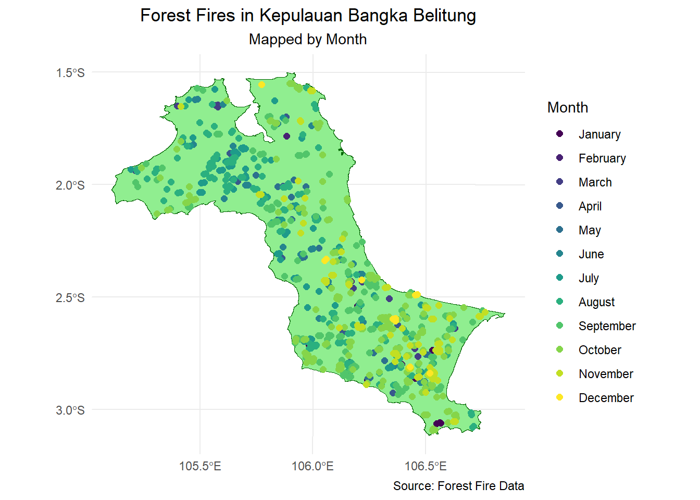
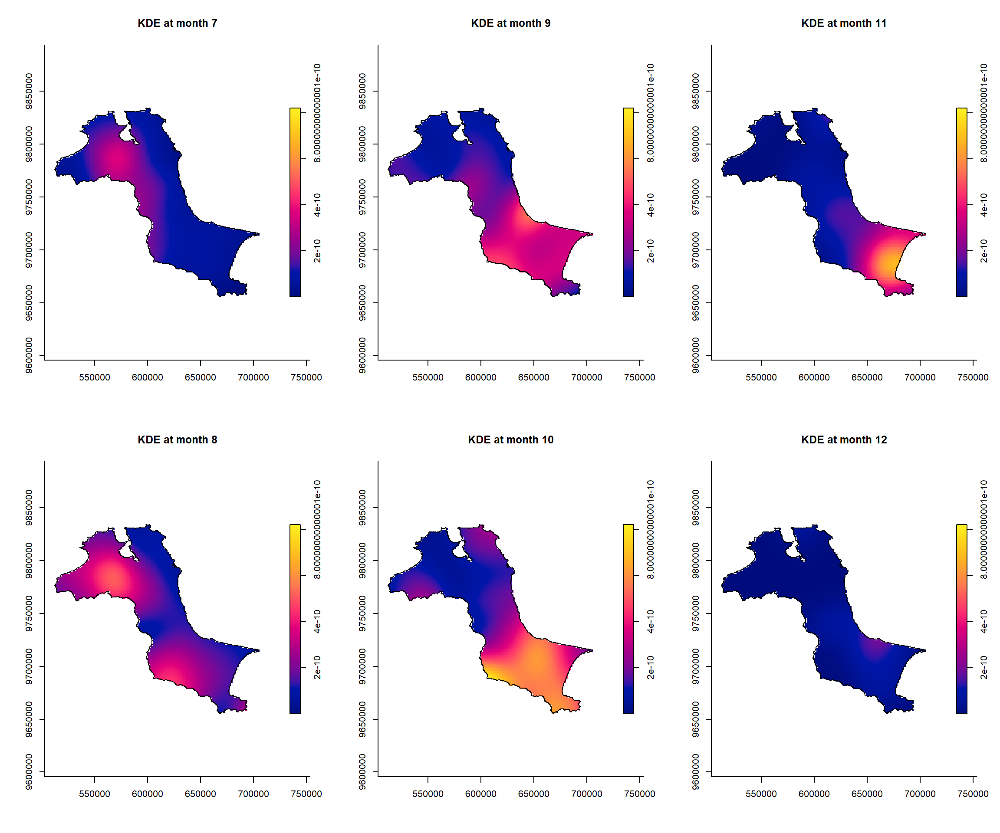
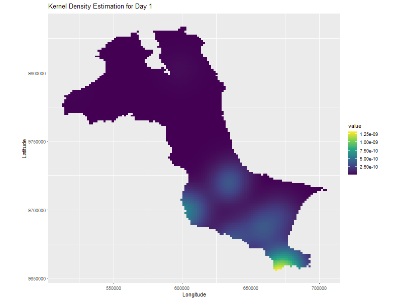

pacman::p_load(sf, raster, spatstat, sparr, tmap, tidyverse, stpp, skimr)In Class Exercise 4: Spatio-Temporal Point Patterns Analysis
1.0 Introduction
A spatio-temporal point process (also called space-time or spatial-temporal point process) is a random collection of points, where each point represents the time and location of an event. Examples of events include incidence of disease, sightings or births of a species, or the occurrences of fires, earthquakes, lightning strikes, tsunamis, or volcanic eruptions.
The analysis of spatio-temporal point patterns is becoming increasingly necessary, given the rapid emergence of geographically and temporally indexed data in a wide range of fields. Several spatio-temporal point patterns analysis methods have been introduced and implemented in R in the last ten years. This chapter shows how various R packages can be combined to run a set of spatio-temporal point pattern analyses in a guided and intuitive way. A real world forest fire events in Kepulauan Bangka Belitung, Indonesia from 1st January 2023 to 31st December 2023 is used to illustrate the methods, procedures and interpretations.
1.1 Research Questions
The specific question we would like to answer is:
are the locations of forest fire in Kepulauan Bangka Belitung spatial and spatio-temporally independent?
if the answer is NO, where and when the observed forest fire locations tend to cluster?
2.0 Setup and Requirements
For the purpose of this study, five R packages will be used. They are:
rgdalfor importing geospatial data in GIS file format such as shapefile into R and save them as Spatial*DataFrame,maptoolsfor converting Spatial* object into ppp object,rasterfor handling raster data in R,sparrprovides function to estimate fixed and adaptive kernel-smoothed spatial relative risk surfaces via the density-ratio method and perform subsequent inference. fixed-bandwidth spati=temporal density and relative risk estimation is also supportedspatstatfor performing Spatial Point Patterns Analysis such as kcross, Lcross, etc., andtmapfor producing cartographic quality thematic maps.
3.0 Importing the Data Sets.
For the purpose of this exercise, two data sets are used, they are:
forestfires, a csv file provides locations of forest fire detected from the Moderate Resolution Imaging Spectroradiometer (MODIS) sensor data. The data are downloaded from Fire Information for Resource Management System. For the purpose of this exercise, only forest fires within Kepulauan Bangka Belitung will be used.
Kepulauan_Bangka_Belitung, an ESRI shapefile showing the sub-district (i.e. kelurahan) boundary of Kepulauan Bangka Belitung. The data set was downloaded from Indonesia Geospatial portal. The original data covers the whole Indonesia. For the purpose of this exercise, only sub-districts within Kepulauan Bangka Belitung are extracted
kbb_sf <- st_read(dsn = “data/rawdata”, layer=“Kepulauan_Bangka_Belitung”) %>%
st_union %>%
st_zm(drop = TRUE, what = “ZM”) %>%
st_transform(crs = 32748)
forestFire_sf <- read_csv("data/rawdata/forestfires.csv") %>%
st_as_sf(coords = c("longitude", "latitude"), crs = 4326) %>%
st_transform(crs = 32748)forestFire_sf <- forestFire_sf %>%
mutate(DayofYear = yday(acq_date)) %>%
mutate(Month_num = month(acq_date)) %>%
mutate(Month_fac = month(acq_date, label = TRUE, abbr = FALSE)) Importing the study area.
kbb_sf <- st_read(dsn = "data/rawdata", layer="Kepulauan_Bangka_Belitung") %>%
st_union %>%
st_zm(drop = TRUE, what = "ZM") %>%
st_transform(crs = 32748)Reading layer `Kepulauan_Bangka_Belitung' from data source
`C:\Users\jiale\Desktop\IS415\IS415-GAA\In_Class_Exercises\In_Class_Exercise_4\data\rawdata'
using driver `ESRI Shapefile'
Simple feature collection with 298 features and 27 fields
Geometry type: POLYGON
Dimension: XYZ
Bounding box: xmin: 105.1085 ymin: -3.116593 xmax: 106.8488 ymax: -1.501603
z_range: zmin: 0 zmax: 0
Geodetic CRS: WGS 84Convert to own
kbb_owin <- as.owin(kbb_sf)
kbb_owinwindow: polygonal boundary
enclosing rectangle: [512066.8, 705559.4] x [9655398, 9834006] unitsclass(kbb_owin)[1] "owin"4.0 Visualizing the Fire Points
tm_shape(kbb_sf) +
tm_polygons() +
tm_shape(forestFire_sf) +
tm_dots()
tm_shape(kbb_sf) +
tm_polygons() +
tm_shape(forestFire_sf) +
tm_dots(size = 0.1) +
tm_facets(by="Month_fac",
free.coords = FALSE,
drop.units = TRUE)
ggplot() +
# Plot the map of Kepulauan Bangka Belitung
geom_sf(data = kbb_sf, fill = "lightgreen", color = "darkgreen") +
# Plot the forest fire points, colored by month
geom_sf(data = forestFire_sf, aes(color = Month_fac), size = 2) +
# Customize the theme
theme_minimal() +
labs(
title = "Forest Fires in Kepulauan Bangka Belitung",
subtitle = "Mapped by Month",
color = "Month",
caption = "Source: Forest Fire Data"
) +
theme(
plot.title = element_text(hjust = 0.5),
plot.subtitle = element_text(hjust = 0.5)
)
5.0 Computing the STKDE By Month
5.1 Extracting forest fire by months
fire_month <- forestFire_sf %>%
dplyr::select(Month_num)5.2 Creating the PPP
fire_month_ppp <- as.ppp(fire_month)
fire_month_pppMarked planar point pattern: 741 points
marks are numeric, of storage type 'double'
window: rectangle = [521564.1, 695791] x [9658137, 9828767] units5.3 Including Owin Object
fire_month_owin <- fire_month_ppp[kbb_owin]
head(fire_month_owin)Marked planar point pattern: 6 points
marks are numeric, of storage type 'double'
window: polygonal boundary
enclosing rectangle: [512066.8, 705559.4] x [9655398, 9834006] unitsglimpse(fire_month_owin)List of 6
$ window :List of 5
..$ type : chr "polygonal"
..$ xrange: num [1:2] 512067 705559
..$ yrange: num [1:2] 9655398 9834006
..$ bdry :List of 2
.. ..$ :List of 2
.. ..$ :List of 2
..$ units :List of 3
.. ..$ singular : chr "unit"
.. ..$ plural : chr "units"
.. ..$ multiplier: num 1
.. ..- attr(*, "class")= chr "unitname"
..- attr(*, "class")= chr "owin"
$ n : int 741
$ x : num [1:741] 606179 661411 637809 654882 669934 ...
$ y : num [1:741] 9703062 9683536 9682757 9690665 9697468 ...
$ markformat: chr "vector"
$ marks : num [1:741] 1 1 1 1 1 1 1 1 1 1 ...
- attr(*, "class")= chr "ppp"skim(fire_month_owin)| Name | fire_month_owin |
| Number of rows | 741 |
| Number of columns | 3 |
| _______________________ | |
| Column type frequency: | |
| numeric | 3 |
| ________________________ | |
| Group variables | None |
Variable type: numeric
| skim_variable | n_missing | complete_rate | mean | sd | p0 | p25 | p50 | p75 | p100 | hist |
|---|---|---|---|---|---|---|---|---|---|---|
| x | 0 | 1 | 620811.99 | 39443.39 | 521564.1 | 595009.7 | 624170.1 | 653519.9 | 695791 | ▂▅▇▇▅ |
| y | 0 | 1 | 9733857.60 | 44333.24 | 9658137.5 | 9696276.9 | 9722669.8 | 9774209.8 | 9828767 | ▆▇▃▆▃ |
| marks | 0 | 1 | 8.58 | 2.04 | 1.0 | 8.0 | 9.0 | 10.0 | 12 | ▁▁▃▇▇ |
5.4 Computing Spatio-temporal KDE
Spattemp.density() of sparr package is used to compute the STYKDE.
st_kde <- spattemp.density(fire_month_owin)
summary(st_kde)Spatiotemporal Kernel Density Estimate
Bandwidths
h = 15102.47 (spatial)
lambda = 0.0304 (temporal)
No. of observations
741
Spatial bound
Type: polygonal
2D enclosure: [512066.8, 705559.4] x [9655398, 9834006]
Temporal bound
[1, 12]
Evaluation
128 x 128 x 12 trivariate lattice
Density range: [1.233458e-27, 8.202976e-10]5.5 Plotting the spatio-temporal KDE Object
plot for the KDE between july 2023 = december 2023.
tims <- c(7,8,9,10,11,12)
par(mfcol = c(2,3))
for(i in tims) {
plot(st_kde, i,
override.par=FALSE,
fix.range = TRUE,
main = paste("KDE at month", i)
)
}
5.6 Plotting the STKDE Object By Day Of Year & Improved
fire_yday_ppp <- forestFire_sf %>%
dplyr::select(DayofYear) %>%
as.ppp()
fire_yday_owin <- fire_yday_ppp[kbb_owin]set.seed(1234)
BOOT.spattemp(fire_yday_owin) Initialising...Done.
Optimising...
h = 15102.47 ; lambda = 16.84806
h = 16612.72 ; lambda = 16.84806
h = 15102.47 ; lambda = 1527.095
h = 15480.03 ; lambda = 771.9715
h = 15668.81 ; lambda = 394.4098
h = 15763.2 ; lambda = 205.6289
h = 15810.4 ; lambda = 111.2385
h = 15833.99 ; lambda = 64.04328
h = 15845.79 ; lambda = 40.44567
h = 15851.69 ; lambda = 28.64687
h = 15863.49 ; lambda = 5.049258
h = 15854.64 ; lambda = 22.74746
h = 15860.54 ; lambda = 10.94866
h = 15859.07 ; lambda = 13.89836
h = 14348.82 ; lambda = 13.89836
h = 13216.87 ; lambda = 12.42351
h = 12460.27 ; lambda = 15.37321
h = 10760.88 ; lambda = 16.11064
h = 8875.282 ; lambda = 11.68608
h = 10432.08 ; lambda = 12.97658
h = 7976.084 ; lambda = 16.66371
h = 9286.281 ; lambda = 15.60366
h = 9615.08 ; lambda = 18.73771
h = 9206.581 ; lambda = 21.61828
h = 8140.483 ; lambda = 18.23073
h = 8795.582 ; lambda = 17.70071
h = 9124.381 ; lambda = 20.83477
h = 9164.856 ; lambda = 19.52699
h = 8345.358 ; lambda = 18.48998
h = 9297.65 ; lambda = 18.67578
h = 8928.375 ; lambda = 16.8495
h = 9105.736 ; lambda = 18.85762
Done. h lambda
9105.73611 18.85762 kde_yday <- spattemp.density(
fire_yday_owin,
h = 9000,
lambda = 19)
summary(kde_yday)Spatiotemporal Kernel Density Estimate
Bandwidths
h = 9000 (spatial)
lambda = 19 (temporal)
No. of observations
741
Spatial bound
Type: polygonal
2D enclosure: [512066.8, 705559.4] x [9655398, 9834006]
Temporal bound
[10, 352]
Evaluation
128 x 128 x 343 trivariate lattice
Density range: [2.001642e-19, 2.445724e-12]5.6.1 Making An Animated Time Series Gif Across Days
First Make the data Streamlined into a Dataframe object
# Assuming kde_yday$z.cond contains 343 frames (one for each day)
days <- 1:343 # Adjust to match the number of days
# Initialize an empty list to hold the data for each day
kde_data_list <- lapply(days, function(day) {
# Extract the kernel density image for each day from z.cond
kde_day <- as.data.frame(kde_yday$z.cond[[day]]) # Convert to a data frame (adjust if necessary)
# Rename the columns appropriately (adjust based on the actual structure)
colnames(kde_day) <- c("x", "y", "value") # Ensure the correct column names for spatial data
# Add a DayofYear column for animation
kde_day$DayofYear <- day
return(kde_day)
})
# Combine all days' data into a single data frame
kde_data <- do.call(rbind, kde_data_list)
# Check the structure of the combined data
str(kde_data) # Ensure it contains x, y, value, and DayofYear columns'data.frame': 1875867 obs. of 4 variables:
$ x : num 512823 512823 514334 514334 514334 ...
$ y : num 9776098 9777493 9770517 9771912 9773307 ...
$ value : num 2.11e-12 2.42e-12 1.19e-12 1.40e-12 1.64e-12 ...
$ DayofYear: int 1 1 1 1 1 1 1 1 1 1 ...Then get plot data into gif.
library(ggplot2)
library(gganimate)
# Create an animated plot using ggplot2
p <- ggplot(kde_data, aes(x = x, y = y, fill = value)) +
geom_raster() +
scale_fill_viridis_c() + # Use a color scale for density values
labs(title = "Kernel Density Estimation for Day {frame_time}",
x = "Longitude", y = "Latitude") +
coord_equal() +
transition_time(DayofYear) + # Animate by DayofYear (1 to 343)
ease_aes('linear')
# Animate the plot and save as a GIF
animate(p, nframes = 343, fps = 10, width = 800, height = 600, renderer = gifski_renderer("kde_animation_343_days.gif"))Results!

coords <- st_coordinates(forestFire_sf)fire_df <- data.frame(
x = coords[, 1],
y = coords[, 2],
t = forestFire_sf$`DayofYear`)fire_stpp <- as.3dpoints(fire_df)